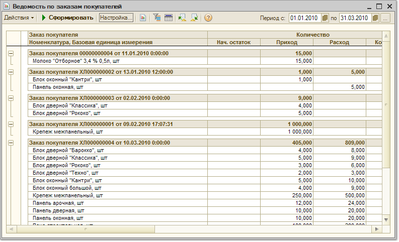

Меню Отчеты > Продажи > Анализ заказов > Ведомость по заказам покупателей
В отчете "Ведомость по заказам покупателей" показывается полная информация по выполнению заказов покупателей за определенный период в части отгрузки товаров. В отчете выводятся количественные показатели: количество заказанного и отгруженного товара в базовых единицах измерения, в единицах хранения остатков и в единицах для отчетов, а также суммовые показатели: сумма в валюте управленческого учета и сумма в валюте взаиморасчетов по тому договору, по которому был оформлен заказ покупателя.
В графе "Приход" показывается количество товаров, заказанных покупателем и их сумма, в графе "Расход" показывается количество товаров, отгруженного покупателям и сумма. В графах "Начальный остаток" и "Конечный остаток" показывается соответственно количество не отгруженного по заказу товара на дату начала и окончания отчета.
Отчет может быть сгруппирован по менеджерам, ответственным за выполнение заказа. В качестве менеджера указывается тот пользователь, который выбран в качестве ответственного в документе "Заказ покупателя".
Для установки группировки по менеджерам необходимо в список группировок добавить поле "Заказ покупателя. Ответственный".
Отчет может быть также сгруппирован по статусам партии, чтобы узнать какой товар был отгружен по заказам покупателем: купленный или комиссионный.
Отчет можно также сгруппировать по дням, неделям месяцам и т.д.
